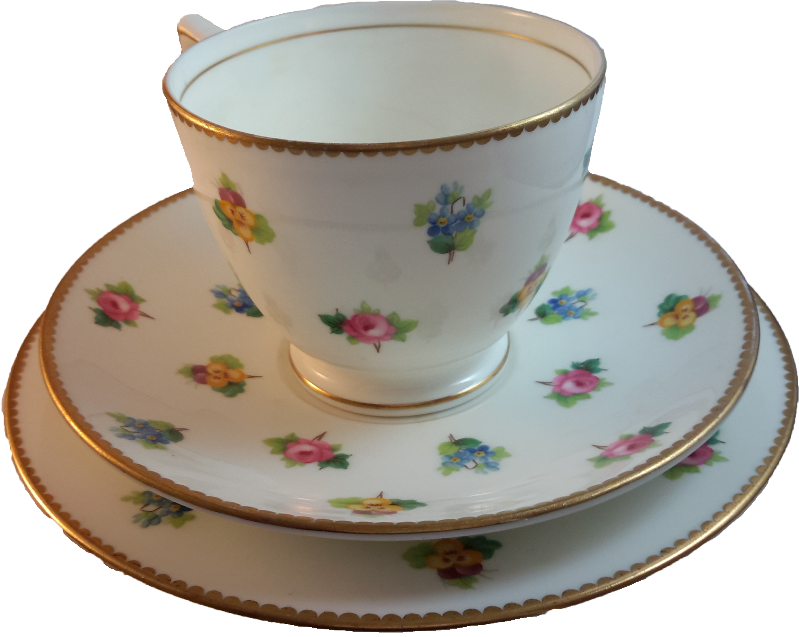

The Wermacht Family Cup
A tale of blood and violence
A rather innocent looking cup, however the Wermacht family went through a great deal of pain due to this porcelain marvel. Acquired by Otto Wermacht in 1879 in Austria from a deceased friend, Otto’s wife took a quick liking to the cup and had it displayed by her bedside table. One night in 1880 her throat was slit in the night, the Austrian high council tried Otto for the murder of his wife, and he was hanged twelve days later. His son Wolfgang inherited the cup and passed it onto his wife as a proclamation of his love to her.

 The Humberton Family Cup
The Humberton Family Cup
 The McKaw Family Cup
The McKaw Family Cup